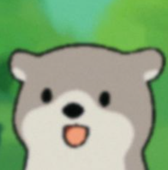

Email: bskbsk9999@naver.com
Phone: 010-5537-2367
Blog: https://blog.naver.com/crysta1l
이름 : 김보석
학력 : 동의대학교 4학년 재학 중
경력 : 신입
Dates: 2022 2학기 - 2024 2학기
내용:전자공학과 교수님 중 1명이 운영하시는 랩실(제어시스템공학/지능형 로봇 연구실)을 2022년 2학기부터 다니게 되었습니다. 각종 임베디드 보드를 다루면서 이와 관련된 내용을 학습하였습니다.
Dates: 2023년
대학교에 소속되어 있는 랩실에서 4학년 선배들과 함께 자율주행 로봇 프로젝트를 진행하였습니다. 그 중에서 저는 카메라를 이용한 사물인식 파트를 맡아서 일을 하게 되었습니다. jetson-nano플랫폼을 사용하여 그 위에 yolov5s 모델을 사용하였고 웹캠을 이용하여 사용자가 원하는 물건을 비교적 정확하게 인식할 수 있었습니다. 비록 완벽하게 완성된 시스템은 아니었지만 시행착오 및 공부했던 내용, 경험근거들을 충분히 평가관들에게 어필한 결과 장려상을 받았다고 생각합니다.
Dates: 2023년
대학교에 소속되어 있는 랩실에서, 저와 같은 학년인 3학년 학우들과 함께 `자율주행을 기반으로 하는 물건 찾아주는 로봇` 이라는 시스템을 설계하였습니다. 수 많은 개발보드 중 라즈베리파이4(ROS를 기반으로 한 lidar sensor), 아두이노 UNO(로봇팔 및 모터제어), 잿슨나노(webcam 2대 및 jetson-inference 사용을 위하여)를 활용하여 사용자가 특정 장소에서 찾길 원하는 물건을 로봇에게 요구할 시 로봇이 자율적으로 움직이며 사용자로부터 요구받은 물건을 찾은 다음 로봇팔을 사용하여 그 물건을 집어 사용자에게 가져다주는 시스템을 설계하였습니다.
Dates: 2023년 - 2024년
임베디드 분야에 관심이 많아 기록을 하는 용도로 운영하고 있는 중입니다.
Awards: 2023 통합 성과경진대회(장려상), 2023학년도 자율설계 융복합 (우수상)
Hobbies: Reading Books